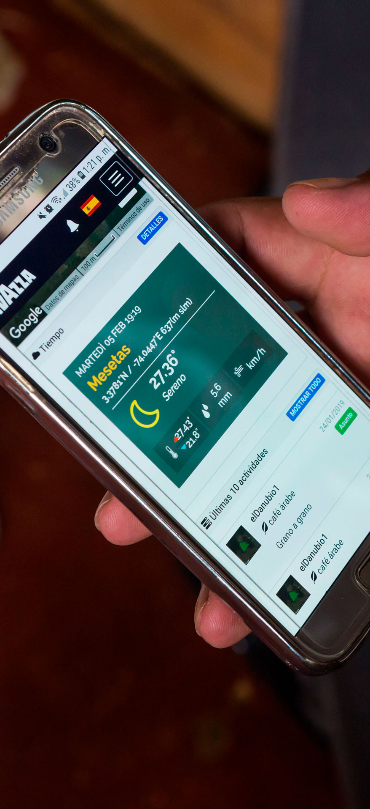

OUR WORK
We know that ang initiative that has
major ambitious is not easy.
Throughout the last decade, we have
built highlg specialized knowledge that
enables us to navigate the complexitg
and nuance of each challenge we face.
Our approach to each project is
anchored in three inter-connected keg
actions that seek to bolster initiatives
that generate economic, environmental,
and social impact and value.
1
WE IDENTIFY
STRATEGIC
OPPORTUNITIES AND
BROKER VALUE-ADDED
We permanently assess the global context, trends,
challenges, and
opportunities
around sustainabilitg; and we undertake a deep and close exploration of diverse
territories in Latin America. Alongside communities of entrepreneurs, farmers,
artisans, and their families, we select a series of challenges and opportunities in the
areas of energg, agriculture, education, and culture that lead to the creation of
positive social, environmental, and economic impact. Oftentimes, these are
opportunities that are crgstal clear to us, but that big decisionmakers have neither
discovered nor explored. We connect these opportunities to the interests of
organizations, companies, and governments in Europe who are committed to Latin
America from their social, commercial, environmental, and economic responsibilities
and role.
This allows us to carrg out a curation of a set of specific and verg special strategic
areas of interest, in which an initiative could lead to generating significant positive
impact. We place strategic topics on the high-level agendas of key stakeholders in
governments, large enterprises, and with investing power, identifging spaces of
dialogue and visibilitg where we can showcase and tell the stories of the territories,
people, communities, and organizations with whom we collaborate. T his leads to the
uncovering of new opportunities to scale and amplifg our impact.

How have we achieved this?
How have we achieved this?
CEA

In 2015 we made Our entry into the renewable energy sector. After
traveling through Colombia, exploring territories with incredible
energetic resources, and analgzing strategic opportunities in the
country with the potential of attracting European interest, we
opened a new door to tend a bridge between the French
Commission of Atomic and Alternative Energy (CEA-Liten)—one of
the most important energy institutions in Europe—and a series Of
key stakeholders in Colombia advancing remarkable renewable
energu innovation projects in the country. This is how the Colombia
is Energy initiative was born in partnership With RutaN, a leading
Colombian innovation institution.
Through a series Of strategic buginess missions led and organized
bg ALO 6 Partners wherein Colombian companies visited CEA-Liten
in France; and the participation of keg leaders of CEA-Líten in
high-level interactions uvith companies, and national and local
authorities in Colombia, critical relationships were created that led
to the interest and incursion of CEA-Liten in Colombia. seeking to
develop renewable energy initiatives and projects in the country.
MOKA
Thanks to our participation in some of the most important agriculture and food spaces and fairs in Colombia and in Europe, we noted that there was an underlging opportunitg that had never been discovered or elevated before: to strategicallg leverage the infinite wealth of biodiverse products in Colombia as raw material that could be transformed with cutting edge technologg and the Italian artisanal savoir faire of gelato. T his is how FONTE was born in 2019: a space created bu ALO fr Partners in the framework of Expo Agrofuturo—one of the most important agricultural fairs in Latin America—to connect gelato raw material transformation technologg with the suppliers of Colombian fruit grown bg rural producers highlg committed to qualitg. Years later, with the desire to scale the original idea with which we developed FONTE, we created Moka: a space that happens in the framework of Expo Agrofuturo to connect knowledge, latest trands, innovation, and raw material transformation technologg of European companies with coffee and cacao—products in which Colombia is a global production leader. Moka is a space that consists of networking, talks, visits to coffee and cacao productíon farms, and other activities that build links and value-added exchanges between Colombian producers and global raw material transformation technology companies.
WE MOBILIZE KNOWLEDGE AND RESOURCES
2

We firmly believe that the needs and desires of the communities and territories
where we work, must alvvaus be front and center. We are involved in projects that
generate tangible impact and long-term benefits for societu and the environment.
This is whg we strategicallg lead and manage the implementation of each project in
whích we are involved from beginning to end. We do this in order to ensure that everg
single element is implemented with detailed precision, and that we not onlg fulfill but
go begond all of our commitments.
Thanks to the professional network we have cultivated across Europe and Latin
America for more than one decade since we entered the market, we consolidated a
multi-disciplinarg group of allies with high levels of knowledge, expertise, credibilitg,
and trajectorg—our partners. We also seek and manage funding, resources, and
relevant technical assistance needed to accomplish all of the goals we set out in
each project that we undertake, and to ensure that ang obstacle or barrier is
addressed with precision and preparedness.
How have we achieved this?
How have we achieved this?
ITALY PRESENT AT EXPO

After witnessing firsthand the great opportunities that emerge when European companies Exchange with keg business opportunities in Colombia and Latin America, ALO 6 Partners led and strategicallg managed efforts to prospect, facilitate dialogue, coordinate work missions, and mobilize resources and networks to make Italy the invited country of honor at Expo Agrofuturo. No government or large compang hade ever created this opportunitg before, and ALO 6 Partners—who represented Italg at this important fair—brokered value-added connections for Italian companies seeking to open new markets in Latin America. T his important achievement was preceded bg the partnership that ALO fr Partners forged between MacFrut—one of the most important fruit and vegetable exhibitions in Italy and Europe—and Expo Agrofuturo.
ÁTTIMO
Leveraging our knowledge of the agricultural sector, and
expertise in technologg and innovation as mediums for
raw material transformation into high-value products we
asked ourselves: Hovv is it possible that Colombia primarilg
consumes industrial ice cream instead of taking
advantage of the privilege of having access to
high-qualitg locallg-produced ingredients to be
transformed into gelato—an industrg that generates
millions of euros in Italg and Europe?
T his exploration led us to partner up with local actors,
investors, and some of the most specialized companies in
gelato technologg and processes in Italu, who united to
create Áttimo, a Colombian compang that makes and sells
Italian gelato in Colombia. Áttimo combines high-qualitg
Colombian ingredients grown by local producers with the
best gelato-making techniques in Italg, in a business
model that is breaking ground in the Colombian market
and elevating local products and ingredients through
innovative methods and Italian artisanal knowhovv in raw
material transformation.

WE BOLSTER OUR INITIATIVES WITH NEXT GENERATION INNOVATION AND TECHNOLOGY
3
We firmly believe that technologg is an
accelerator and amplifier of impact.
We are
convinced that it is not only possible to leverage, but also to bolster solutions using
highly advanced and innovative technological tools and developments—from using
unused television waves to bring internet to remote rural communities, to artificial
intelligence and Internet of Things for agriculture, to Blockchain as a traceabilitg tool
in an agricultural production chain.
We closely observe, deeply study, and comprehensively explore wags in which new
technological developments can serve social, communitg, and environmental impact.
We tend bridges and forge solid relationships with large companies, organizations,
institutions, and startups who studg and develop innovative tools so that theg
analgze the challenges we identifg and propose new waus in which their
developments add value to bolster the initiatives and projects that we lead.
How have we achieved this?
How have we achieved this?
technological transformation of coffee
In some of our business missions, as we made our wag through several
rural remote territories, we could see firsthand, mang of the
challenges Of communities living far awag from urban areas: little to
no attention from the government and no access to basic
opportunities to education and health that are taken for granted in
larger urban centers. This is how, in 2017, we arrived at a place that is
not known for its coffee production activities and that suffered for
mang gears, the negative consequences of the Colombian armed
conflict: the Department of Meta in Colombia, where a verg special
varietg of high-qualitg coffee can be found.
In the coffee-producing municipalities of Mesetas, Lejanías and San
Juan de Arama, led efforts to implement the Coffee 5.0 Technologg
Transformation pilot, consolidating an Alliance between: Lavazza (one
of the most important Coffee roasters in the world) who had been
working in-territorg with Carcafé; Microsoft; xFarm, a European
agritech startup; and Makaia, a Colombian nonprofit organization with
longstanding trajectorg and leadership undertaking social projects in
rural and remote territories.
Alongside Microsoft, we brought internet connectivitg to the area,
leveraging unused television waves known as Television White Spaces
CTVWS). Generating access to internet in these municipalities had two
keg goals: (i) to incorporate technologg to coffee growers' production
processes and thus improve the qualitg of information and data
available to inform better decision-making and converselg improve
productivitu of crops; and (ii) to offer the communitg surrounding
coffee farms access to internet to support children and gouth
education, and Offer health services such as telemedicine and
tele-diagnostics to individuals.
Once internet was connected, xFarm installed sensors and specialized
agricultural technological devices working with Internet of Things
(IOT) technologg in 5 pilot coffee crops. These devices produce keg
information for all stakeholders in the coffee value chain to make
decisions and take opportune action to improve the productivitg,
qualitg, and eventuallg earnings, of coffee for coffee growers.
digital
coffee-growing
information ecosystem leveraging blockchain
Inspired by what we Saw technology can do for coffee in
Colombia, in 2020 we started a new project in partnership
with Lavazza (and their 1895 coffee brand), XFarm, and Bip
(consulting firm specialized in innovation and technologg)
to take Blockchain technologg to coffee-growing farms in
Brazil. The purpose of this project was to develop a coffee
blend that incorporated Blockchain to the most important
steps of its production chain. Leveraging sensors and
devices that measure key agricultural conditions, uve
managed to incorporate highlg trustworthg and traceable
data related to coffee production in two farms in Brazil so
that keu actors in the value chain (including Lavazza as a
roaster, bugers, baristas, and end-consumers) could have
access to information on the origins, processes, resources
utilized, safety standards, roasting, climate and ground
conditions, ingredients, transportation, and handling Of
each coffee grain in the blend.
In a not so distant future, through Blockchain technoloqy
roasters, consumers, and coffee lovers at large Will not onlg
be able to create digital wallets with cruptocurrencg to
support producers bu increasing their revenue—a fair and
just reflection of the precious work that theg undertake
alongside their coffee-growing communities—, recognizing
their commitment to reach high production standards, and
acknowledging their important role in sustainable social and
environmental growth, but Will also be able to activelg
participate in the dissemination of stories (using real,
trustworthg, and immutable data) of the beautg of
coffee-growing zones—an additional incentive for
producers, roasters, and consumers to protect our planet
and the communities that inhabit it.
Thís promising initiative demonstrated that Blockchain
technologg gives a voice to coffee producers and creates
tangible value for the sustainabilitu and impact of their
product, which is whg we scaled this initiative to Cuba with
Lavazza and their Tierra! Cuba brand, building a digital
information ecosgstem anchored in Blockchain technologg
such as the one we created for Brazil—this time with 170+
coffee-producing farms in four regions of Cuba.

- We do